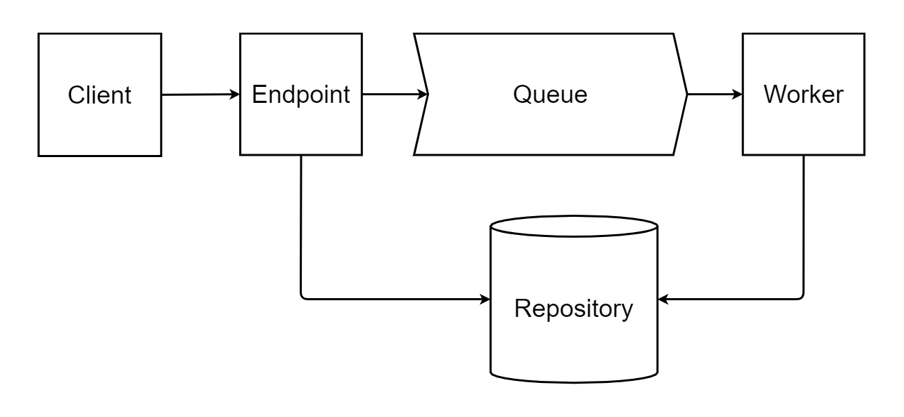

Let me present a pattern we used to solve a problem haunting our enterprise application for ages. It was initially designed to handle long running operations, using RESTful approach, but we soon realized it could be used in many other ways. As it generalizes the system of submitting requests and obtaining responses, it can easily be adapted to different business processes, while keeping unified client interface.
This post is part of C# Advent Calendar 2020. Cheers to Matthew D. Groves for letting me participate!
Building blocks
From a client perspective, the pattern usage is pretty simple: it submits a job for processing to an endpoint; job status is polled until processing is finished; if status was successful, client uses endpoint to obtain output.
On server side, several components are required to achieve such functionality. Lets take a look at the big picture and define individual pattern pieces.
Job
A job is a principal entity, representing client intent processed by a designated worker. It is composed of:
- Header, containing job metadata such as unique identifier, current status, time of creation/start/finish, potential issues as well as estimated time of completion
- Input parameters
- Output values
Worker
Component that does heavy lifting. Main responsibility is actual processing, as each worker is able to handle specific job type. In simple terms, we can describe it as a function accepting input parameters and returning either job output or an error.
Endpoint
Serves as an entry-point for clients. After creating a job, client should be able to obtain job status at any point in time, as well as output after processing is finished. Endpoint should also allow client to cancel and clean-up a job. Hence, it needs to provide following services:
- Create job
- Get job status
- Get job output
- Delete job
Job Repository and Queue
A repository will be used to store all jobs, which would allow both endpoint and worker to read and update job state. For now, let’s consider repository an abstraction, as concrete implementation and storage technology may vary, depending on usage scenario.
Binding between an endpoint and a worker would be achieved using a job queue concept. It has to provide a producer and a consumer, depending on the component using queue services. Similar to how repository was defined, implementation may range from memory one to a hyper-scale message broker.
Final pattern architecture is depicted in the diagram bellow. As all core components are defined, we should move on to implementation using APS.NET Core.

ASP.NET Core implementation
Implementation considerations
In order to make the implementation as universal as possible, we need to limit job inputs and outputs to one of each. If multiple values are expected, they could be provided via a custom model. JobExecutionResult will serve as a wrapper for output value, containing result of worker execution and any possible issues. If we define them as types TInput and TOutput, our worker and endpoint could look something like this:
As endpoint is user independent concept, it will be up to pattern to provide the implementation. On the other hand, worker is responsible for executing custom actions, hence it’s implementation has to be provided by the pattern user. This reasoning will come into play during design, as we would like to provide plugin architecture for individual pattern components. This will allow utilizing only building blocks required for given scenario, while the user would provide implementation of required and customizable parts.
Plugging in worker implementation
Worker flow is straightforward: it should use queue consumer to listen for incoming jobs; whenever one is received, it should process it and update job status and output via repository; then it waits for next one and repeats previous steps. This cycle is supposed to run for the whole application lifetime, as new jobs can arrive at any time. A natural solution to implement such functionality are hosted services. In our case, we could extract all common code (starting queue consumer, input/output serialization and job update) to a WorkerInvoker<TWorker> hosted service, bound to specific worker by it generic type TWorker.
Adding TWorker type to DI container has multiple benefits. On one side, it can be injected into WorkerInvoker<TWorker>, removing the need to create it manually. On the other hand, it allows developers of TWorker to freely inject business services into it.
Exposing endpoints
Since controllers are used as primary entry point into MVC applications, they are an obvious choice for coupling with endpoints. In this case, initial description should be followed to the letter, as we are in domain of HTTP REST operations. Hence, controllers should include following routes:
- POST /jobs: allows creating new jobs; responds with status 202 (Accepted), containing job resource URL
- GET /jobs/{jobId}: resource URL can be used for polling job status, while in progress; when processing is finished, use 303 (See Other) redirect to provide client with an output resource URL
- GET /jobs/{jobId}/output: output resource URL; should return 200 (OK) result containing output value, after job processing finishes; returns 404 (NotFound) error otherwise
- DELETE /jobs/{jobId}: disposes of any reserved resources; client should call it after polling finishes and output is obtained; if not done by client, server should clean up old jobs automatically
The burden of creating a controller should not fall on the user; it is the responsibility of the pattern itself, since each route functionality is known in advance. For this purpose we could implement a generic JobsController<TEndpoint>, which would be bound to specific endpoint via its type parameter TEndpoint.
As multiple endpoints per service have to be supported, MVC requires providing different underlying type for each controller. This is not possible with our idea of using a generic one, as changing generic’s type parameter does not change overall generic type. Instead, we should create individual controller type from base generic dynamically, using a bit of TypeBuilder reflection magic. Generated types could then be added to MVC using custom IApplicationPartTypeProvider.
Few words on repository and queue
Following how we defined job repository and queue, respecting interfaces would be:
The pattern has to supply default memory implementation for both of them. Although this should suffice for test and single-service usage, it completely falls flat in any advanced scenarios. Hence, replacing default implementations must be allowed via extensions.
Configuring job services
We should follow principals ASP.NET Core was build upon and adopt a plugin architecture in order to configure our pattern services. I used a sample project to demonstrate how such behavior could be achieved. The following example includes definition of one endpoint and its bound worker.
In this case, PingRequest and PingResponse correspond to input and output types. PingWorker represents a custom implementation of IWorker, supplied by user. Other components (endpoint, repository and queue) are provided by pattern and only configured here.
Usage alternatives
Proposed implementation is just one of many possible, as well as its usage. All building blocks are introduced as abstract concepts, which can be adapted for different scenarios than initially intended. For example, an endpoint could be utilized to issue an RPC call without knowing the address of remote service; client would use endpoint to create a new job, which would reach designated worker via queue, effectively removing the need of individual services knowing other ones even exist. Only constraint is imposed by specific business feature, having strictly defined input and output.
Further improvements can be introduced on workers as well. In order to use them in a real-world scenarios, there has to be a possibility of configuring their maximum scaling and execution period limits. This feature will have to be supported by queue implementation, as worker is invoked based on actions triggered by queue consumer.
Finally, default memory implementations of queue and repository are only good for demonstration purposes. Repository should offer some form of permanent external storage, especially if usage in multi-service applications is considered. Same goes for queue, as the need for underlying message broker is evident in even simple production scenarios.
Conclusion
In this article I explained which set of problems did we solve using long running job pattern. We also saw one of the ways to implement it, using ASP.NET Core MVC. As a final observation, I described how inner pattern components can be used outside of MVC, in any system that wants to generalize request/response flow and reduce service coupling.
Source code and samples can be found on Github. Individual packages have also been published to nuget.org, in case you would like to try them in your own application.
Comments